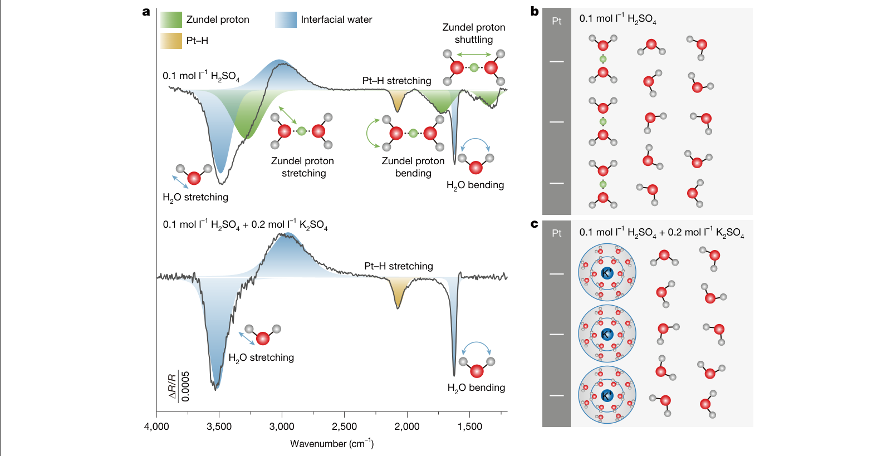
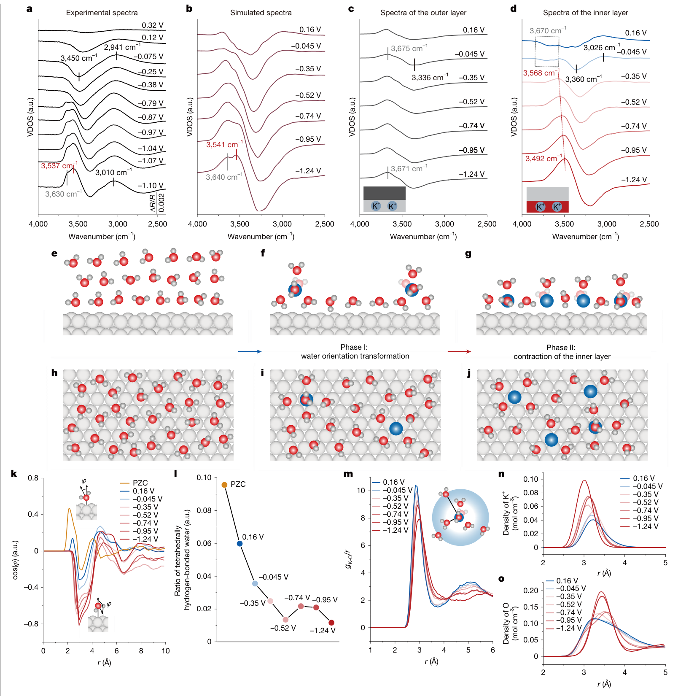
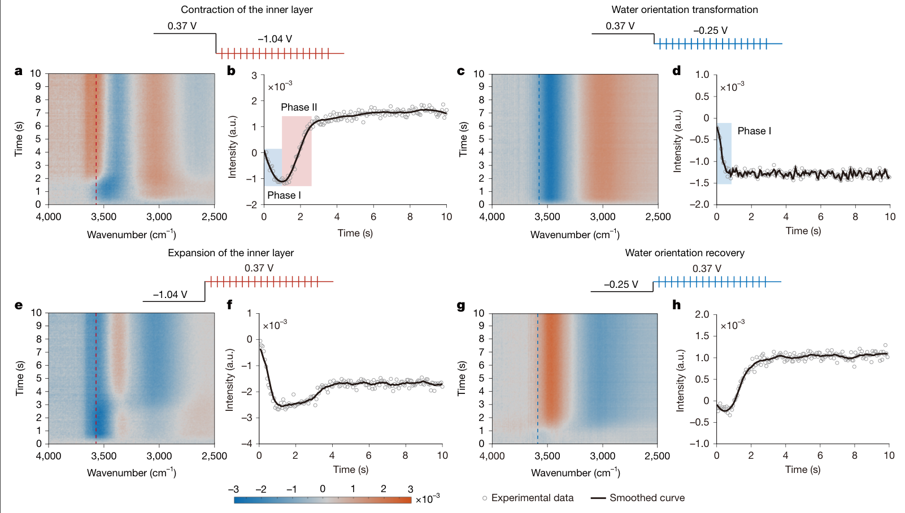
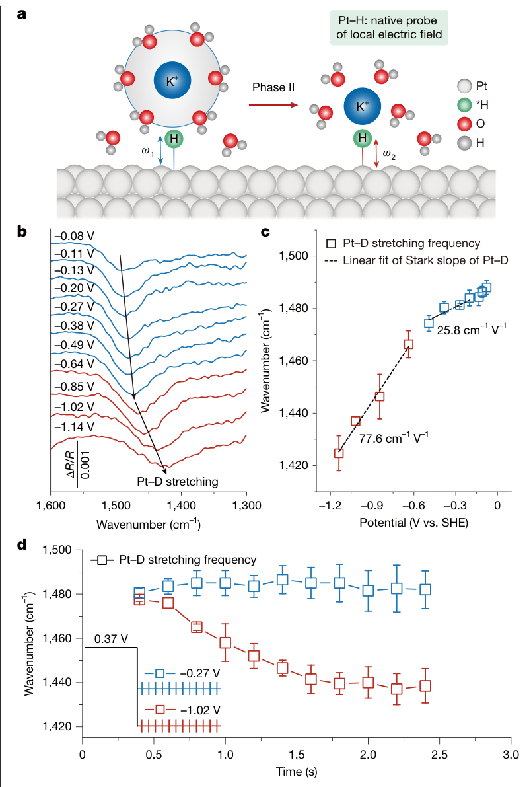
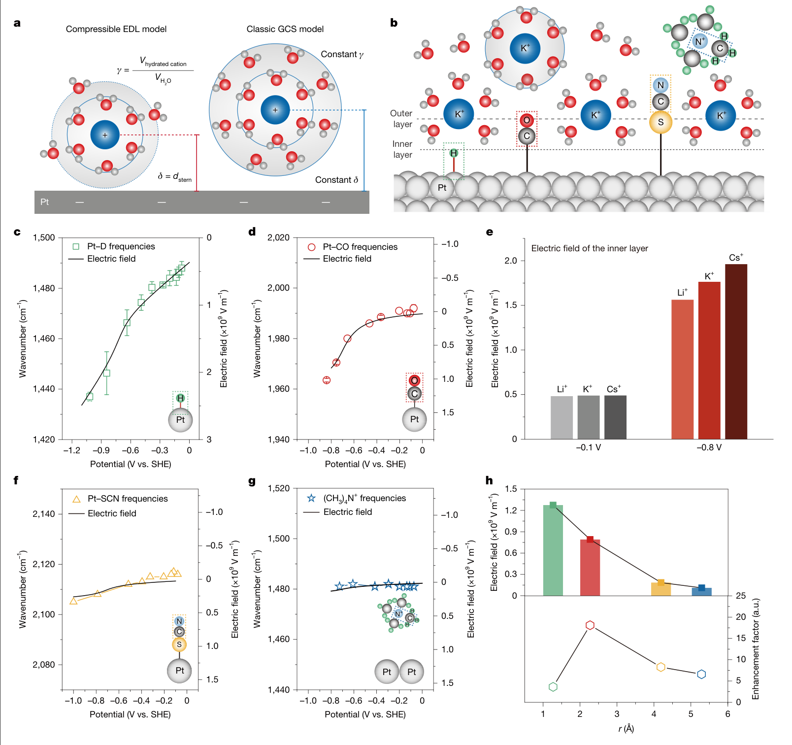

强负电位下，水先转身，离子后挤近：电双层怎样随反应工况演化
论文原文 ↗原文：Xiao-Yu Li、Yu-Chen Cai 等，Probing far-from-equilibrium dynamics of electrical double layers，Nature，2026，DOI：10.1038/s41586-026-10986-7。所读19页PDF含正文、方法和10幅扩展数据图；接受日期为2026年8月4日，在线发表日期仍为占位文字。以下页码均为PDF页码。
电极接触水溶液后，表面电荷会吸引相反电荷的离子，附近的水分子也会调整朝向。这片相互耦合的电荷与溶剂区域就是电双层。它产生的局部电场会影响吸附物和反应中间体，因此，即使外加电位相同，界面结构不同，反应位点实际感受到的环境也可能不同。
通常的电双层模型把紧贴电极的区域近似为几何固定的电容层。但铂电极在强负电位下持续析氢时，离子还会保持完整水合壳、与电极保持原来的距离吗？电位突然改变后，水与离子又会同时响应吗？本文把界面红外光谱、原子模拟和连续介质模型接起来，得到一个具体答案：在含K⁺的酸性溶液中，界面水先调整取向与氢键网络，K⁺随后部分脱水并靠近铂，使内层缓慢收缩、局部电场进一步增强；电位反向切换时，水网络则经过另一条恢复路径。
一、方法怎样做：把水的振动、离子的结构和局部电场连起来
先让反应中的界面水变得可见
作者在镀金的硅棱镜上制备均匀、稳定的纳米铂膜，利用金属表面增强红外信号。**表面增强红外吸收光谱（SEIRAS）**对靠近电极的分子振动特别敏感，因此能在较强析氢反应条件下跟踪界面水，而不被大量体相水的信号淹没。实验一方面逐步改变电位，比较不同状态的振动谱；另一方面突然切换电位，以62.5 ms的时间分辨率记录界面如何走向新的状态。
首先要知道负表面附近主要聚集哪一种正离子。作者比较0.1 mol/L H₂SO₄与额外含0.2 mol/L K₂SO₄的酸性溶液。纯酸中可以辨认出Zundel水合质子的振动：这是一个过量质子在相邻水分子之间共享的局部结构。加入钾盐后，这组特征消失，作者据此判断K⁺进入近界面并替代了该类水合质子，后续重点便转向水合K⁺参与的电双层。（第1—2页）

图1｜反离子身份怎样改变（原文Fig. 1，PDF第2页）。a的横轴是振动波数，绿色为Zundel水合质子的特征，蓝色为水、黄色为Pt–H；加入钾盐后绿色特征消失。b、c是相应的结构解释示意：从水合质子参与的界面转向水合K⁺参与的界面。
再用原子模拟回答：究竟是哪一种分子动作改变了水谱？
水的红外谱会同时受到取向、氢键和水含量影响，单看一个峰增强或减弱，很难区分这些变化。作者因此用**机器学习分子动力学（MLMD）**模拟带吸附氢的Pt(111)—水—钾界面：先用密度泛函理论计算不同构型的电子结构，再让机器学习势学习原子之间的相互作用，最后用它推进更长的原子轨迹。
这类带电界面的特殊困难，是电位改变时金属与溶液电荷会重新分布。作者使用DPχ势，并把它放入同时处理短程化学作用与长程静电作用的DPLR框架。其作用可以直观理解为：原子移动时，模型既更新附近的化学相互作用，也允许电荷分布随环境响应，而不是把每个金属原子的电荷从头到尾锁死。训练采用约6万份DFT构型，并通过“模拟探索新构型—交给DFT计算—补回训练集”的循环扩充数据。计算电位通过计算标准氢电极方法标定，便于与实验电位比较。文中电位均以标准氢电极（SHE）为参照。（第8、12页）
以含K⁺溶液为例，整条解释链是：先改变电极电位，记录水的实验差谱；再对不同电位状态进行超过0.5 ns的原子采样，计算水的振动频率分布；把水分为靠近电极的内层与较远的外层，定位主要变化来自哪里；随后读取水分子朝向、氢键数量、K⁺周围的水分布，以及K⁺和水氧到铂表面的距离。这些结构统计把“水谱变了”进一步拆解成“水转向了”“水合壳少了”或“水离开了金属与离子的间隙”。计算的振动态密度表示振动频率分布，与红外吸收强度并非同一个量，作者主要用特征频率及随电位的变化来联系两者。
最后还需知道结构变化是否影响反应位点的电场。作者在重水体系中跟踪吸附氘的Pt–D振动。振动频率随电场改变的现象称为振动Stark效应，这里把它用作局部场的读数。连续介质模型则不再逐个追踪原子，而是用平均电荷和电势分布描述界面；作者让水合阳离子的有效大小与离电极的距离能够改变，从而把原子模拟中的收缩转化为可计算的电场变化。
二、主要发现：水与离子不同步，局部场也不会一步到位
1. 两阶段变化分别对应水重排与K⁺部分脱水
先看逐步负移电位的实验。差谱采用参考状态作比较，向下的峰表示信号增强，向上的峰表示信号减弱。从0.32 V到−0.38 V，弱氢键水相关的宽带增强，强氢键水信号减弱；进一步负移，到−0.79 V出现3537和3630 cm⁻¹的两条向上峰。后半段发生的事情，已经不能仅由水朝向的连续变化来概括。
模拟重现了这两组变化，并把主要来源定位到内层水。第一阶段，更多水分子以氢朝向电极的构型排列，近似四面体、具有四个氢键的水减少，较少氢键的水增多。也就是说，电场先改变了水的朝向和相互连接方式，而K⁺的水合结构尚基本保留。

图2｜从振动变化辨认两种结构过程（原文Fig. 2，PDF第3页）。a、b比较实验与模拟谱，c、d将模拟水谱分为外层和内层；e—j给出两阶段结构示意。下方k、l描述水朝向与四氢键水比例，m以K—O距离统计水合壳，n、o以距铂表面的距离统计K⁺和水氧的密度。由蓝色向红色对应电位变负，重点是内层谱变化与水合、位置变化的对应关系。
第二阶段，K⁺约5 Å处的第二水合壳明显受损，第一水合壳峰也降低，表现为部分脱水。与此同时，K⁺到铂的密度峰由约3.3 Å移到约3.0 Å，而水氧的密度峰移向约3.45 Å。离子更靠近金属，水却从离子与金属之间退出；水合壳缩小又为更多阳离子靠近表面腾出了空间。作者由此把后续水信号减少归因于内层水含量下降和内层收缩。这里的距离是模拟中的分布峰位置，刻画的是分子尺度的结构变化。（第2—3页）
2. 电位突然切换后，收缩比水重排慢；反向恢复还有短暂“过冲”
不同电位下的结构可以提示两阶段，但要确定谁先发生，必须看同一次电位切换后的时间过程。作者把电位从0.37 V骤变到−1.04 V：水取向和氢键网络相关信号较快出现，随后3500—3650 cm⁻¹范围的水信号继续减弱，约2900 ms才接近稳态。这说明在电位已经到达终点后，内层仍在缓慢收缩。
反向从−1.04 V切回0.37 V时，过程也有快慢之分，却多出一个特别的中间态：弱氢键或较自由的水信号在750 ms时迅速增大，约为最终稳态的1.5倍，随后才回落，强氢键水逐渐恢复。作者结合模拟解释，密集阳离子的快速迁移会扰乱水的氢键连接，暂时增加低配位水，之后水网络才重新建立。

图3｜同一终点电位怎样经由不同路径到达（原文Fig. 3，PDF第4页）。a、c、e、g的横轴为波数、纵轴为时间，颜色表示差谱信号；相邻曲线追踪3560 cm⁻¹处的信号。左侧比较0.37↔−1.04 V，右侧比较0.37↔−0.25 V。强负向阶跃的先降后升与反向阶跃的短暂过冲，体现不同的中间结构；右侧温和阶跃主要只有水重排。
较温和的0.37→−0.25 V阶跃只出现第一阶段，约300 ms完成，反向恢复则约需1200 ms。这些比较表明，显著的两阶段收缩与路径依赖出现在远离零电荷电位——电极净表面电荷为零的电位——的强负极化条件下。论文所谓“不可逆重组”，在这里指正反向经过不同的水网络中间态，并非界面永久无法恢复。（第2—4页）
时间先后来自毫秒到秒的实验，原子模拟负责解释相应状态和局部结构；纳秒级轨迹没有直接算出秒级收缩时间。
3. 内层收缩会继续增强局部场，影响的大小还取决于离表面多远
Pt–D给出了与上述慢过程相呼应的结果。在较低过电位区，Pt–D波数随电位的斜率为25.8 cm⁻¹/V；在较高过电位区增至77.6 cm⁻¹/V，约为原来的三倍。这个斜率反映的是改变外加电位时振动频率怎样响应，其中包含局部电场随电位的变化。
更直接的时间对照是：阶跃至−0.27 V后，Pt–D频率很快稳定；阶跃至−1.02 V后，它在约2500 ms内由1478降至1439 cm⁻¹。也就是说，在最终电位保持不变时，场敏感的振动读数还在缓慢改变，时间范围与内层收缩相近。这把“离子—水结构在松弛”与“反应位点的局部场继续增强”连接起来。（第4—5页）

图4｜结构松弛怎样进入局部场读数（原文Fig. 4，PDF第5页）。a示意吸附氢作为原生场探针，实际b—d用重水中的Pt–D测量。c的横轴是电位、纵轴是振动波数，红蓝区间斜率不同；d保持各自终点电位，比较频率随时间变化，强负电位下的红色曲线持续红移。c、d的误差条分别来自三次与两次独立测量。
为解释这种非线性，作者改造传统Gouy–Chapman–Stern模型。传统模型中，内层距离和水合离子大小固定；新模型允许两个量随电极表面电荷变化：δ是电极到阳离子中心的有效距离，γ是水合阳离子体积与一个水分子体积的比值。K⁺部分脱水使γ下降，靠近表面使δ下降，两者共同提高近界面容纳电荷的能力，并改变电势沿距离的下降方式。因此局部场不再只按固定几何随外加电位线性变化。

图5｜收缩怎样改变电场的空间分布（原文Fig. 5，PDF第6页）。a比较可变δ、γ与固定几何模型，b标出四种探针的位置；c、d、f、g把实验波数变化与模型电场曲线对照，左右纵轴分别为波数和电场。e比较Li⁺、K⁺、Cs⁺在−0.1与−0.8 V的预测场强；h的横轴为距电极的距离，上部为场强、下部为收缩带来的增强倍数，应分开理解。
模型预测，收缩前Li⁺、K⁺、Cs⁺引起的内层场差别较小，收缩后则出现Cs⁺＞K⁺＞Li⁺的排序。另一方面，作者用CO、硫氰酸根（–SCN）和四甲基铵〔(CH₃)₄N⁺〕振动探测不同界面位置，与Pt–H/Pt–D一起比较。结果显示，绝对场强随离电极距离增加而降低，但收缩造成的相对增强倍数在CO位置最大；作者将其归因于该探测位置最接近收缩中的阳离子层。由此可见，“哪里原本场最强”与“哪里最受收缩影响”是两个不同问题。（第5—6页）
三、对领域的贡献：把固定电容层改成会重组、会收缩的反应界面
本文最重要的进展，是把电双层从静态电荷分布推进到有结构、有时间先后、有历史路径的界面。它给出三个彼此相连的认识：水取向与离子水合结构响应不同步；强负极化能推动K⁺部分脱水并靠近金属；这段较慢的结构演化会在固定终点电位下继续改变局部电场。
相较于固定内层几何的经典图像，水合离子的有效尺寸与位置因此成为必须考虑的变量。电解质效应也有了更具体的解释入口：不同阳离子如何保持或失去水合水、在哪里聚集、怎样改变周围水网络，会共同决定反应位点感受到的场。这项工作提出并验证了“电双层可压缩性”的结构—电场联系，为理解反应工况下的非线性界面响应提供了方法和物理图像。
结论主要针对本文的酸性、含碱金属离子的铂析氢界面。所读PDF未附独立补充信息，DPχ与连续模型的完整实现参数位于补充说明中，因此这里不展开可复现的算法细节；实验时间响应与纳秒原子采样也各自承担不同尺度的解释任务。
附：原始摘要完整中文翻译
带电固—液界面在生物与电化学系统的能量和物质转化中处于核心地位，其中强烈的局部电场支配反应动力学。然而，在涉及快速电荷转移和远离平衡动力学的真实电催化条件下，电双层的分子结构与演化仍然缺乏理解。经典电双层模型是在平衡、非反应条件下推导的，无法捕捉反应界面上出现的界面过程。在此，我们开发了一个集成实验与计算的框架，直接解析析氢反应条件下的电双层动力学。化学稳定的纳米结构铂膜电极使得在更高过电位下开展高灵敏度、时间分辨的表面增强红外吸收光谱成为可能，而机器学习分子动力学则在纳秒时间尺度上捕捉界面电荷涨落和溶剂动力学。这种联合方法揭示了内层非线性的两阶段演化，并且这一演化增强了局部电场。时间分辨光谱进一步揭示，在周期性电位调制过程中，界面水发生不可逆的结构重组。这些发现表明，在远离平衡的条件下，离子与界面水以不同步的方式响应，并建立了一个定量的分子框架，用于理解静电势变化、离子的界面电致收缩、电解质效应，以及面向能量转化技术的合理电解质设计。